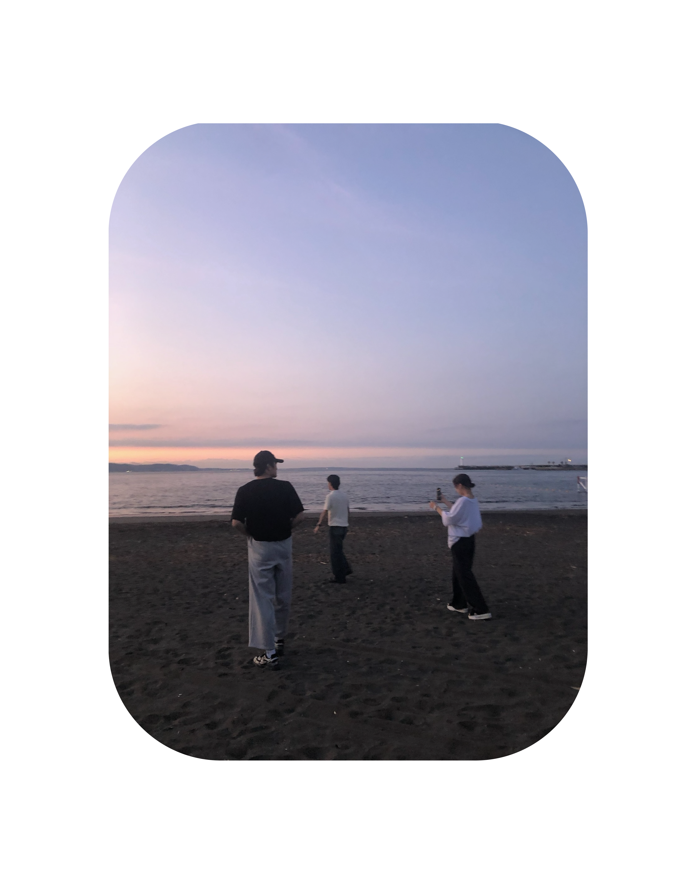
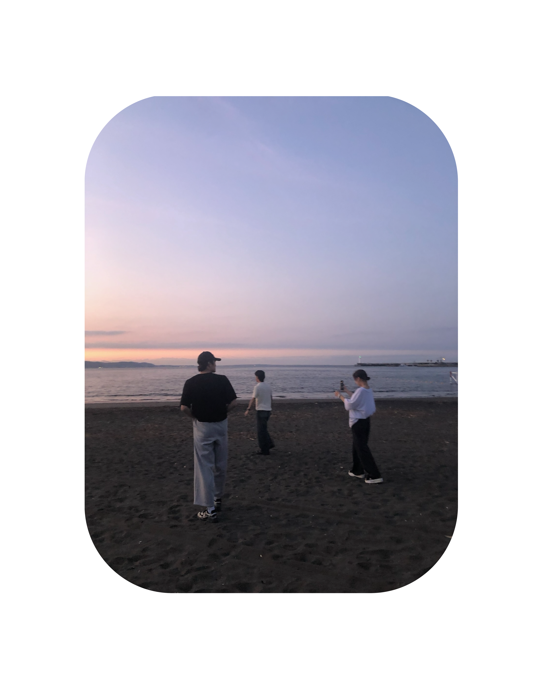

|
 |  |
 |
 |
JASMIN 17
Where delicate jasmine meets golden light
朝の庭の静けさ、ネロリとオレンジブロッサムがそっと重なり合う。
Jasmin 17 whispers of creamy vanilla and warm sandalwood,
余韻として残るムスクの肌触り。Not just a fragrance —
it becomes memory, it becomes moment, it becomes scent carried softly on the breeze.
|
 | |
|
|